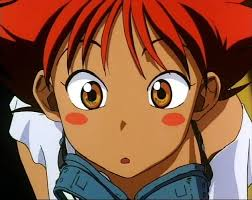

MACRO
2026.06.28 · 8분 읽기
금리 인하 사이클, 어떤 자산이 먼저 움직이나
과거 4번의 인하 국면에서 섹터 로테이션 패턴을 정량 분석했습니다.
특정 섹터에 얽매이지 않고, 전 산업에 걸쳐 모든 섹터를 커버합니다.
금리·환율·유동성 사이클을 기반으로 자산배분 프레임을 제시합니다.
AI 수요 사이클과 캐파 증설을 추적하는 분기 모델.
파이프라인과 임상 단계별 가치를 정밀 평가합니다.
원자재·전력·인프라 밸류체인을 심층 분석합니다.
브랜드·유통·소비 트렌드 변화를 추적합니다.
수주 사이클과 정책 모멘텀을 함께 봅니다.
차세대 성장 테마를 선제적으로 발굴합니다.
멀티팩터 백테스트와 리스크 패리티 기반 포트폴리오.
자본비용과 규제 변화가 미치는 영향을 분석합니다.
모든 리서치는 아이디어 → 검증 → 반증 → 공유의 단계를 거칩니다. 우리는 목표가를 맞히기보다, 돈 되는 투자 논리가 끝까지 유효한지를 검증합니다.
산업 변화와 현장에서 '돈 되는 고민'의 후보를 찾습니다.
기업 관계자 미팅과 공급망 점검으로 가설을 검증합니다.
팀원이 서로 논리의 약점을 공격하며 끝까지 반증합니다.
목표가가 아닌 '투자 논리'를 전달하고, 전제가 유효한지 계속 추적합니다.
사업구조 전환. 모바일에서 산업·전장으로, 이제 AI 인프라 수혜가 더해지며 밸류에이션 리레이팅이 진행 중.
MLCC 수요 폭증. AI 서버(GB200/GB300 랙스케일)는 고전압·고밀도 설계로 단위당 MLCC 탑재량이 급증.
과점 공급구조. 하이엔드 MLCC는 무라타·삼성전기로 제한적. 8월부터 주문 가속, 상반기 가동률 98% 도달.
과거 4번의 인하 국면에서 섹터 로테이션 패턴을 정량 분석했습니다.
광산별 생산원가 데이터로 본 균형 가격 시나리오.
캐파 증설 일정과 수요 모델을 대조했습니다.
매일 치열하게 회의하고, 기업 관계자들을 직접 만나며, 좋은 투자 기회를 찾기 위해 고민합니다.

리서치 애널리스트
Generalist · 매크로부터 개별 기업까지

리서치 애널리스트
바이오 섹터 · 산업 전반 커버

리서치 애널리스트
데이터 · 퀀트 모델 설계

리서치 애널리스트
크로스섹터 · 산업 전반 커버
돈 되는 고민만을 담아 텔레그램 채널에서 전해드립니다.
@ym_research · 본 페이지는 정보 제공 목적이며 실제 투자 자문이 아닙니다.